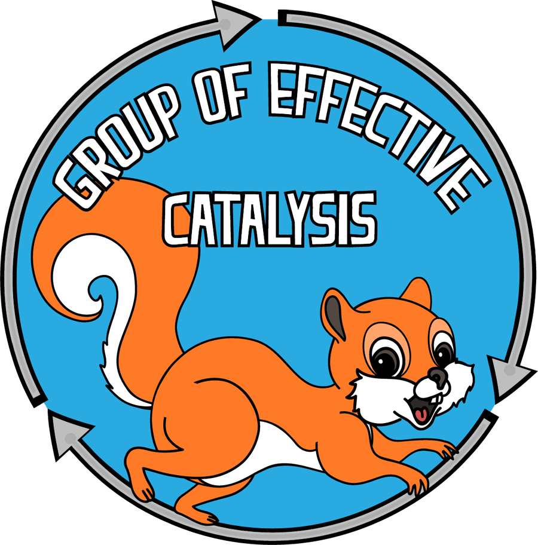

Waste gas
in.
Molecules
out.
Steel is being produced in big amounts every year. Carbon monoxide is the main waste in this production and it should be used for industry use. Reducing without external source of hydrogen allows to avoid hydrogenation functional and protecting groups. Group of Effective Catalysis, INEOS RAS.
Say hello
Our mascot never stops experimenting
Click the wheel to set our mascot running and start a reaction — watch the mix separate as it distills. Purely for fun, not our actual lab data.
Publications
All 82 papers


Research
Read MoreSteel is being produced in big amounts every year. Carbon monoxide is the main waste in this production and it should be used for industry use.
Reducing without external source of hydrogen allows to avoid hydrogenation functional and protecting groups.


Gallery
Read More


News
Read More
7 Dec 2025
New publication in Organic Letters
23 Nov 2025
New sustainable ketone-alkylation published in Journal of Catalysis
20 Oct 2025
Our Team Publishes in Journal of Catalysis with Aldehydes as Reducing Agents
30 Sep 2025
Our new publication was published in ChemSusChem about THF as an alkylating agent
19 Aug 2025
New publication in Beilstein J. Org. Chem.
Media
Read More
Interview with Denis Chusov about The Nobel Prize in chemistry in 2021 — Meduza
On the web page of Nature you can find highlight about our paper — Nature
Waste gases from steelmaking repurposed to prepare pharmaceutical — Chemistry World
We have found the ideal conditions for the hydrogen borrowing reaction. Interview. — N+1